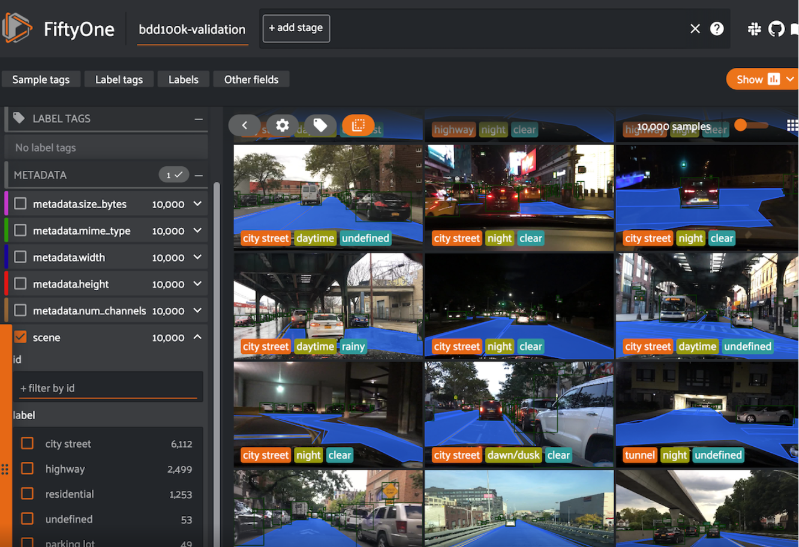
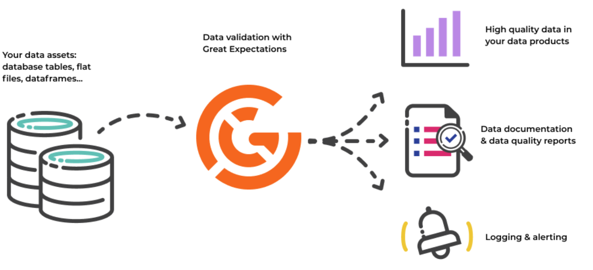
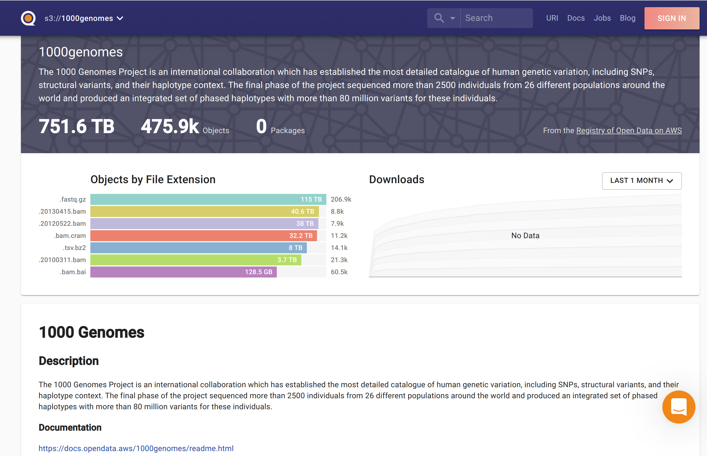
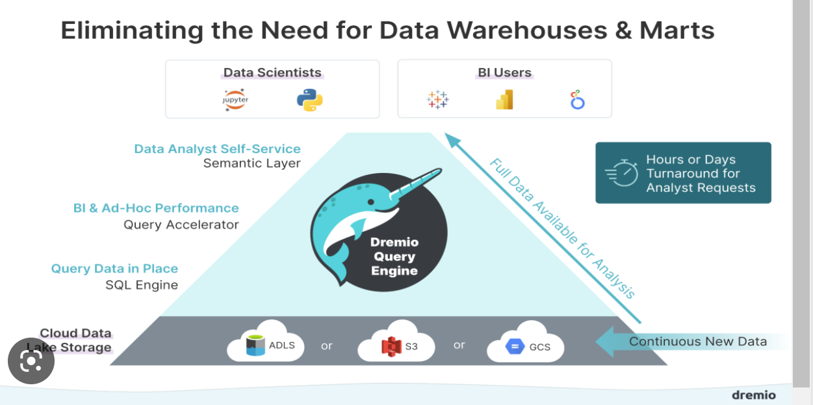

Project Portfolio
Machine Learning Projects
Churn prediction
Why
- At ZEE5, on average 20% of paid subscribers were churning every month and the company wanted to reduce the churn and retain the customers.
Role
- As a Data Science scientist, my target was to reduce the churn of customers from 20% to 17% in six months.
Action
- We started with talking with different teams and understanding their perspective on churn, gathering as much domain knowledge as possible.
- Analyzing the patterns of churn and searching for the various data sources available. Talking to different data owners and understanding the data
- Exploratory data analysis
- Feature engineering
- Creating a model to predict churn
- Evaluating results
- Model deployment
- Measuring the impact of the predictions and making changes for improvement
Result
- We are able to reduce churn by 4%, there by increasing the customer rentention and revenue for the organisation.
Tools Used
- AWS S3, Athena, AWS Glue, EC2, ECR
- Databricks
- Sisense / Tableau for Dashboards
Content Moderation, Tagging & Monitoring
why
- At Lomotif, we wanted to keep the platform clean and safe to increase the satisfaction of all our customers. We wanted to increase their enjoyment by recommending videos which users will prefer and are difficult to discover on the platform due to plethora of choices.
Role
- As a Data Science manager, my target was to blacklist the NSFW content and reduce the workload of manual moderators by 60%. Tag the videos and improve the number of video views and watch time by 5%
Action
- Brainstorming what is meant by NSFW, reading the content moderation guidelines
- Understanding what should not be published on the platform.
- We created computer vision models and also used open source models to detect NSFW and category of the content.
- Evaluate and deploy the models
- Used an open source tool Fiftyone to automate samping videos, getting the ground truth, calculating the ML metrics and publishing on the dashboard.

Result
- We reduced the effort of moderation and tagging by more than 80%. Increased the watchtime and video views on average by 3%
Tools Used
- Snowflake, EC2, Ray Serve, Grafana, Fiftyone
Modeling as a Service for look-alike Models
Why
- At Eyeota, partner companies have the data for survey participants. The number of survey participants are very less. Find the customers in our company’s database who are similar to survery participants for ad targeting and monetisation.
Role
- As a Data science manager, develop a framework for data integration with partners and automation the pipeline for building look-alike models, segment the customers and send the data for campaigning.
Action
- Co-ordination with different teams for data integration
- Designing a framework for data ingestion, feature engineering, model creation, segmenting the customers and evaluation of results
Result
- Creating a framework to automate data ingestion, creation of hundereds of look-alike models and segmenting the customers and deploying them. Using the framework for integration with different partners. Increasing the campaign revenue by more than 2%.
The complete deployment was automated using Mlops
Tools Used
- AWS S3, Glue, Sagemaker, EMR, EC2, Mlflow
- Snowflake
- Airflow
- Apache Superset for Dashboarding
Placement prediction
Why
- At Upgrad, student enrollment for a course is high, if he is informed in advance the placement outcomes of the course.
Role
- As a Data scientist, I need to create a model which will help increase the enrollment by 10%
Action
- Collecting the data on student’s past educational performance, work experience etc.
- Creating and evaluating the model
Result
- Student enrollment increased 12% when they were informed in advance their placement outcomes
Tools Used
- AWS & Streamlit
Recommendation systems
Why
- At Lomotif, enabling content discovery and providing informed choices for content consumption as per the user preferences
Role
- As a Data Science manager, my role is to design a framework for recommendation engines, executing the project and evaluating the results. Recommendation engines should increase the video views and watch time by 5%
Action
- Designing a recommendation system based on candidate retrieval and ranking system
- Creating the pipelines for data processing
- Execution of candidte retrieval using elasticsearch
- Modeling and ranking the videos for the user
- Evaluation of the recommendation system
Result
- We are currently deployment stage
Tools Used
- Elasticsearch, FastAPI, AWS, Snowflake
Distributed computing, Data cleaning and Data Quality
Building Datalake
why
- At ZEE5, data is generated from numerous tools which is used by different departments in an organisation. Accessing data generated by different tools was becoming difficult and different numbers were being reported at different levels.
Role
- As a Data Science manager my role was to create a single point of truth for the data. Automate the data processing requirements of the organization by 50% and reduce the infrastructure cost by 30%
Action
- Collecting all the data generated by different tools at a central location.
- Designing a framework for automation, cleaning and processing of the data.
- Scheduling of workflows and creating alerts for failures
- Creating different marts for the data
- Bronze tables - Cleaned and transformed data
- Silver tables - Joining different tables, calculating and storing the features required for analysis and different machine learning models
- Gold tables - Calculating and storing metrics for business reporting and dashboards
- Setting up of expectations for data quality, monitoring of validations and alerts in case of any discrepancy.

Result
Achieved more than 50% of organisations data processing requirements and automation using Data engineering and MLOps
Tools Used
- AWS S3, EMR, Athena, Glue, Databricks, Pyspark, Hive metastore, Airflow etc
- Great Expectations for monitoring Data quality
- Dashboards for monitoring the data processed and results of quality checks
Data Discovery
why
- Data Scientists in the organization was facing challenges to know about existing data sources, understanding their definition and meaning. Knowledge existed in silos as the information generated by one data scientist was not shared with others
Role
- To create a interactive platform where information about data sources are searchable, definitions of features available. Creating a knowledge repository to share all the analysis and reports.
Action
- Search for a data discovery platform which can easily integrate with AWS
- Starting and executing a POC for a data discovery platform
- Providing access to the platform to all data scientists in the organization and collecting feedback.
- Implementation in production
Result
- Increase in work satisfaction and productivity of all the data scientists in the organization.

Tools Used
- Quilt, Elasticsearch
Visualization
Building dashboards
Why
At ZEE5, Business teams wanted to see a few metrics with dynamic date ranges which were extremely difficult to show on the dashboards. An example, unique users on the platform with a dynamic data range.
Role
Do a POC on how to show these metrics on the dashboard which can be rendered very fast and are computationally cheap.
Action
- Conducting a study on how to process the data at scale to calculate these metrics and provide the information to the dashboard quickly
- Reading about sketching algorithms which can provide approximate results very quickly
- Undertaking a POC
- Creating a dashboard and presenting the results
Result
- Able to provide metrics required by the business team on the dashboard for a dynamic date range

Tools Used
- Dremio, Druid, Apache Superset